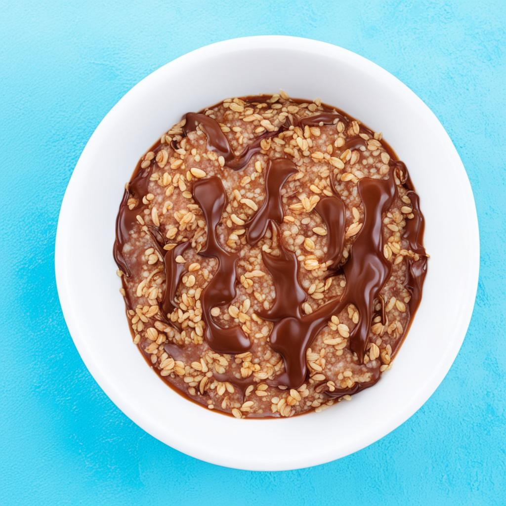

рецепт шоколадно-банановых оладьей

список ингредиентов
- Бананы - 2 шт.
- Яйцо - 1 шт.
- Какао-порошок - 2 ст. л.
- Мука - 100 г
- Сахар - 2 ст. л.
- Разрыхлитель теста - 1 ч. л.
- Молоко - 100 мл
- Сливочное масло - 2 ст. л.
- Ванильный экстракт - 1 ч. л.
- Соль - щепотка
метод приготовления
- В миске размять бананы вилкой до состояния пюре.
- Добавить в миску яйцо, сахар, молоко, ванильный экстракт и растопленное сливочное масло. Хорошо перемешать.
- Просеять муку, какао-порошок, разрыхлитель теста и соль в миску с моклоткой. Аккуратно перемешать до получения однородного теста.
- Разогреть сковороду на среднем огне и смазать ее маслом.
- Выложить на сковороду тесто ложкой порционно и формировать оладьи диаметром около 7-8 см.
- Жарить оладьи с каждой стороны по 2-3 минуты, пока они не подрумянятся.
- Подавать шоколадно-банановые оладьи горячими с добавлением меда, свежих ягод или кленового сиропа.